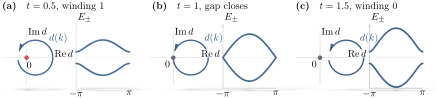
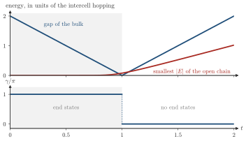

Page 10 of 16 of this session
3.9c The SSH model, the Bloch Hamiltonian and the Zak phase
The end states were found on a finite chain. Can we know from the bulk alone, where there are no ends, whether a chain has them? We will now see that the Bloch Hamiltonian of the chain gives a phase, which is \(\pi\) for \(t<1\) and \(0\) for \(t>1\), and that this phase tells us when the end states exist.
\[\varphi = \frac{a\,p}{\hbar} = k\,a. \tag{2.10}\]
\[H(\varphi) = \begin{pmatrix} 0 & 1+\eta\,e^{-i\varphi} \\ 1+\eta\,e^{i\varphi} & 0 \end{pmatrix}, \qquad \epsilon_\pm(\varphi) = \pm\left|1+\eta\,e^{-i\varphi}\right|. \tag{2.13}\]
The first relation, of Section 2.6, says that the phase \(\varphi\) of a Bloch state is its quasi-momentum \(k\) when the lattice constant is \(a=1\). The second is the Bloch Hamiltonian of the chain with two orbitals per cell of Section 2.7, with the intracell hopping \(1\) and the intercell hopping \(\eta\). On this page the same chain has the intracell hopping \(t\) and the intercell hopping \(1\), and the phase is written with the opposite sign, which does not change the bands.
So far the topological phase was defined by the end states of a finite chain. We can make this fully precise with the Bloch Hamiltonian of Section 2.5. With the lattice constant \(a=1\) the phase \(\varphi\) of Session 2 is the quasi-momentum \(k\), by (2.10). We take the intracell hopping \(t\) and the intercell hopping normalized to \(1\), and we write the Hamiltonian in momentum space in the \((A,B)\) basis.
The Bloch Hamiltonian of the SSH chain is the \(2\times 2\) matrix
\[H(k) = \begin{pmatrix} 0 & d(k) \\ d^*(k) & 0 \end{pmatrix} = (t + \cos k)\,\sigma_x - \sin k\,\sigma_y, \qquad d(k) = t + e^{ik}. \tag{3.5}\]
Its eigenvalues are \(E_\pm(k) = \pm|d(k)|\), with \(|d(k)|=\sqrt{1 + t^2 + 2t\cos k}\). The two bands are fixed by the complex number \(d(k)\), and the gap closes only where \(d(k)=0\).
The gap closes only where \(d(k)=0\), which requires \(t=1\) and \(k=\pi\). This is the topological phase transition point. It agrees with the separation between \(t<1\) and \(t>1\) above, since at \(t=0\) the end sites are fully dangling, which is topological. At \(t=1\) the chain becomes the fully symmetric gapless chain.
The topological invariant here is the one-dimensional Berry phase that the lower-band Bloch state \(|u_-(k)\rangle\) accumulates as \(k\) goes once around the Brillouin zone, which is called the Zak phase.
The Zak phase of the lower band is
\[\gamma = i \oint_{\text{BZ}} \langle u_-(k)|\partial_k u_-(k)\rangle\, dk \pmod{2\pi}. \tag{3.6}\]
For the SSH chain it is \(\pi\) times the number of times that \(d(k)\) goes around the origin. So \(\gamma=\pi\) for \(t<1\), where the open chain has end states at zero energy, and \(\gamma=0\) for \(t>1\), where it has none.
The steps From the Bloch Hamiltonian (3.5) to the Zak phase (3.6) as a winding
We write the complex number \(d(k)\) with its size and its phase, \(d(k)=|d(k)|\,e^{i\phi(k)}\). The first step is the eigenvector of the lower band of (3.5). We can check by applying the matrix that
\[|u_-(k)\rangle = \frac{1}{\sqrt2}\begin{pmatrix}1\\ -e^{-i\phi(k)}\end{pmatrix}, \qquad H(k)\,|u_-(k)\rangle = -|d(k)|\,|u_-(k)\rangle .\]
The first row gives \(d\cdot(-e^{-i\phi})=-|d|\), and the second row gives \(d^*=|d|\,e^{-i\phi}\), which is \(-|d|\) times the second component. So the eigenvector only contains the phase of \(d(k)\) and not its size.
The second step is the overlap inside (3.6). Only the second component depends on \(k\), and its derivative is \(i\,\partial_k\phi\;e^{-i\phi}/\sqrt2\), so
\[\langle u_-|\partial_k u_-\rangle = \frac12\,\big(-e^{i\phi}\big)\big(i\,\partial_k\phi\;e^{-i\phi}\big) = -\frac{i}{2}\,\partial_k\phi .\]
The third step is the integral over the Brillouin zone,
\[\gamma = i\oint\Big(-\frac{i}{2}\,\partial_k\phi\Big)\,dk = \frac12\oint\partial_k\phi\;dk = \frac12\,\big[\phi(2\pi)-\phi(0)\big] = \pi\,w .\]
The curve \(d(k)\) is closed, so its phase comes back to the same value up to a multiple of \(2\pi\), and the integer \(w\) is the number of times that \(d(k)\) goes around the origin. For \(d(k)=t+e^{ik}\) this is \(w=1\) for \(|t|<1\) and \(w=0\) for \(|t|>1\).
The last point is the meaning of modulo \(2\pi\) in (3.6). The phase of a Bloch state is not fixed, so we can replace \(|u_-(k)\rangle\) by \(e^{i\chi(k)}|u_-(k)\rangle\), where \(\chi\) comes back to itself across the zone up to \(2\pi n\) with \(n\) an integer. The overlap gets the extra term \(i\,\partial_k\chi\), and \(\gamma\) changes by \(-2\pi n\). Only the value of \(\gamma\) modulo \(2\pi\) has a meaning, and \(\gamma=\pi\) and \(\gamma=-\pi\) are the same.
Geometrically, \(\gamma/\pi\) counts how many times \(d(k)\) winds around the origin as \(k\) goes from \(0\) to \(2\pi\). From (3.5), \(d(k) = t + e^{ik}\) draws a unit circle centered at \((t,0)\) in the complex plane. This circle encloses the origin when \(|t|<1\), and it does not enclose it when \(|t|>1\). This agrees with everything above, since \(\gamma = \pm\pi\) for \(t<1\), which means one winding, a topological insulator and gapless edge modes, and \(\gamma = 0\) for \(t>1\), which means no winding, a trivial insulator and no edge modes.
The value of the Zak phase is in exact one-to-one correspondence with the presence or absence of a zero-energy edge state, and this is the one-dimensional version of the bulk-boundary correspondence of Section 3.7. Figure 3.4 shows this winding together with the bands that it controls, and it shows that the two insulating phases cannot be distinguished from their spectra alone.

The notebook session3.ipynb has no section on the SSH chain. Its exercises start directly from the two-dimensional ribbons of the quantum Hall and quantum anomalous Hall states, in Sections 3.6 and 3.10. To see the zero modes and the winding of (3.6) numerically, you can build by hand the finite chain with \(N\) sites of Section 3.9. The method is the same tight-binding diagonalization that we used for the finite islands of Section 1.10. Then you can see how the two eigenvalues close to zero move away from zero as \(t\) is increased above \(1\).
Schematic 3.11 shows the result of such a calculation, done with pyqula. The Zak phase of the infinite chain and the level closest to zero of the open chain change at the same value of \(t\).

g3_ssh_zak.py
The Zak phase has been measured with cold atoms in a one-dimensional optical lattice with two sites per cell and alternating hoppings, which is the SSH chain. The atoms are moved across the Brillouin zone with Bloch oscillations, and the phase that they accumulate is read with Ramsey interferometry. The difference of the Zak phase between the two dimerizations of the lattice is measured as \(0.97(2)\,\pi\), and (3.6) gives \(\pi-0=\pi\) for this difference. The measurement is in this article.
The bands of the SSH chain are
\[E_\pm(k) = \pm|d(k)|, \qquad d(k) = t + e^{ik}.\]
Here \(t\) is the intracell hopping and \(k\) is the momentum. The intercell hopping is \(1\). For which \(t\) and \(k\) does the gap close?
Show the answers
- A. ✗ False
This is false. At \(k=\pi\) we get \(d=t+e^{i\pi}=2-1=1\), which is not zero. The energy there is \(\pm1\).
- B. ✓ True
This is true. The gap closes when \(d(k)=t+e^{ik}=0\). This requires \(e^{ik}=-t\), which has a solution only for \(|t|=1\), and for \(t=1\) it is \(k=\pi\).
- C. ✗ False
This is false. At \(k=0\) we get \(d=1+1=2\), so the energy is \(\pm2\), which is the top of the band and not a crossing.
Two SSH chains have the intracell hoppings \(t=1/2\) and \(t=3/2\), with the intercell hopping \(1\). Both have the same gap, \(2|1-t|=1\). What is the difference between them?
Show the answers
- A. ✓ True
This is true. The curve \(d(k)=t+e^{ik}\) is a unit circle centered at \((t,0)\). It encloses the origin for \(t=1/2\) and not for \(t=3/2\), and the two gaps look the same in the bulk spectrum.
- B. ✗ False
This is false. For \(t=3/2\) the smallest value of \(|d|\) is \(|1-t|=0.5\), so there are no levels between \(-0.5\) and \(0.5\). Numerically, the open chain of 40 sites has its lowest levels at \(\pm0.53\).
- C. ✗ False
This is false. For the open chain of 40 sites we get two levels at \(\pm7\times10^{-7}\) for \(t=1/2\), inside the gap, and the lowest levels are at \(\pm0.53\) for \(t=3/2\). The weaker intracell bond gives the end states.
The Zak phase of the lower band of a chain is
\[\gamma = i \oint_{\text{BZ}} \langle u_-|\partial_k u_-\rangle\, dk \pmod{2\pi},\]
where \(|u_-\rangle\) is the Bloch state of the lower band at the momentum \(k\). An SSH chain has the intracell hopping \(t=0.9\) and the intercell hopping \(1\). What is \(\gamma\)?
Show the answers
- A. ✗ False
This is false. The phase does not follow \(t\). A sum over 200 points of the Brillouin zone gives \(\gamma/\pi=1.000\) for \(t=0.5\) and also for \(t=0.9\). It can only change where the gap closes, at \(t=1\).
- B. ✓ True
This is true. The curve \(d(k)=t+e^{ik}\) is a circle of radius \(1\) around the point \(t=0.9\), so it still goes once around the origin, and each turn gives \(\pi\).
- C. ✗ False
This is false. The value \(0\) belongs to \(t>1\). For \(t=0.9\) the smallest \(|d(k)|\) is \(0.1\), at \(k=\pi\), so the gap is small but open, and the origin is still inside the circle. For \(t=1.1\) the same sum gives \(0.000\).
A chain has the intracell hopping \(t\) and the intercell hopping \(t'\). The off-diagonal element of its Bloch Hamiltonian is
\[d(k) = t + t'\,e^{ik}.\]
Each picture shows \(d(k)\) in the complex plane, for \(k\) from \(0\) to \(2\pi\). The red dot is the origin. An open chain is cut between two unit cells. Which chain has end states at zero energy?
Show the answers
- A. ✗ False
This is false. The circle has its center at \(t=1.5\) and the radius \(t'=1\), so the origin is outside and the winding is zero. The open chain of 40 sites has its levels closest to zero at \(\pm0.53\).
- B. ✗ False
This is false. This is the largest circle, with \(t=2\) and \(t'=1.5\), but the origin is outside it. The gap is \(2|t-t'|=1\), the same as in the other two chains, and the open chain of 40 sites has its levels closest to zero at \(\pm0.55\). The size of the curve does not matter, only whether the origin is inside.
- C. ✓ True
This is true. The curve goes once around the origin, so the Zak phase is \(\pi\). Here \(t=0.25\) and \(t'=0.75\), and the open chain of 40 sites has two levels at \(\pm2\times10^{-10}\), inside a gap of \(1\).
Compute the Zak phase (3.6) of the lower band in the two dimerized limits, directly from the eigenvectors. In the first limit only the intracell hopping is there, \(d(k)=t\) with \(t>0\). In the second only the intercell hopping is there, \(d(k)=e^{ik}\). Then say what changes in the second limit if we choose the unit cell that has the strong bond inside it.
Solution
For \(d(k)=t\) the matrix (3.5) is \(t\,\sigma_x\), and it does not depend on \(k\). Its lower eigenvector is \((1,-1)/\sqrt2\) for every \(k\), so \(\partial_k u_-=0\) and \(\gamma=0\).
For \(d(k)=e^{ik}\) the lower band has the energy \(-1\), and we can check by applying the matrix that
\[|u_-(k)\rangle = \frac{1}{\sqrt2}\begin{pmatrix}1\\ -e^{-ik}\end{pmatrix}, \qquad |\partial_k u_-(k)\rangle = \frac{1}{\sqrt2}\begin{pmatrix}0\\ i\,e^{-ik}\end{pmatrix}.\]
The overlap is \(\langle u_-|\partial_k u_-\rangle=\tfrac12\,(-e^{ik})(i\,e^{-ik})=-i/2\), the same for every \(k\), and
\[\gamma = i\int_0^{2\pi}\Big(-\frac{i}{2}\Big)\,dk = \pi .\]
The two limits have flat bands and a gap, and they differ only in the Zak phase.
If we choose the other unit cell in the second limit, the strong bond is inside the cell and nothing joins the cells. Then \(d(k)=1\), which is the first case, and \(\gamma=0\). The infinite chain is the same, so the Zak phase belongs to the chain together with the choice of the unit cell. An open chain makes this choice, since it is cut between two cells.
This matters for a calculation. We have to compute \(\gamma\) with the unit cell that the open chain is made of, and \(\gamma=\pi\) then means end states for that way of cutting the chain. Also, a diagonalization gives each eigenvector with an arbitrary phase, so in practice \(\gamma\) is computed from the product of the overlaps \(\langle u_-(k_i)|u_-(k_{i+1})\rangle\) along the zone, where these phases cancel.
- In Section 5.17 the Kitaev chain has a bulk invariant of the same kind, and its zero modes appear only with open boundaries.
- In Section 4.18 a Berry phase around a closed loop, now of a quasihole, gives a fractional charge.
- In Section 10.6 the Zak phase is one of the invariants that separate phases with no local order parameter, and Section 10.6b shows why this makes them hard to classify.
- In Section 9.8 a vacancy probes a bulk invariant through an in-gap mode, for the Haldane model and for a chiral p-wave superconductor.